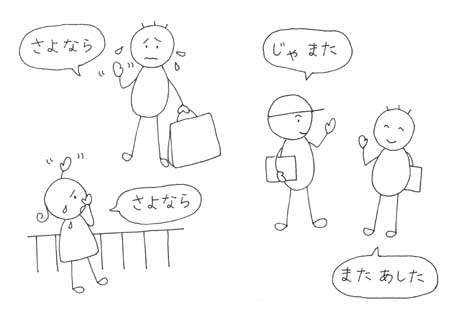

Článek vychází z rozhovoru v první lekci.
Otázky typu "odkud jsi", "jak se jmenuješ" a podobné se často zkracují.
| O-namae wa(nan desu ka.) お名前は（何ですか。） | (Jaké je)vaše jméno? |
| O-kuni wa(dočira desu ka.) お国は（どちらですか。） | (Jaká je)vaše země původu? |
| Go-senmon wa(nan desu ka.) ご専門は（何ですか。） | (Jaký je)váš studijní obor? |
| Dewa mata. ではまた。 | Nashledanou. Zase někdy. |
| Dža mata. じゃまた。 | Tak čau/Měj se. Méně formální |
| Mata ašita. また明日 | Tak zítra. |
| Sajonara. さよなら。 | Sbohem/Nashledanou. |
| Šicurei šimasu. 失礼します。 | Odcházím. při odchodu z místnosti |
Když opouštíte vlastní dům/byt tak se nepoužívá "sajonara（さよなら）", to jevýraz pro odloučení na delší časový úsek. Pokud se uvidíte s danou osobou brzy, raději použijte "dewa mata（ではまた）" nebo "mata ašita また明日".
"Šicurei šimasu（失礼します）" je zdvořilá forma upozornění, že opouštíte něčí přítomnost. Používá se to i při návštěvě cizího bytu.
| < | ^ | > |